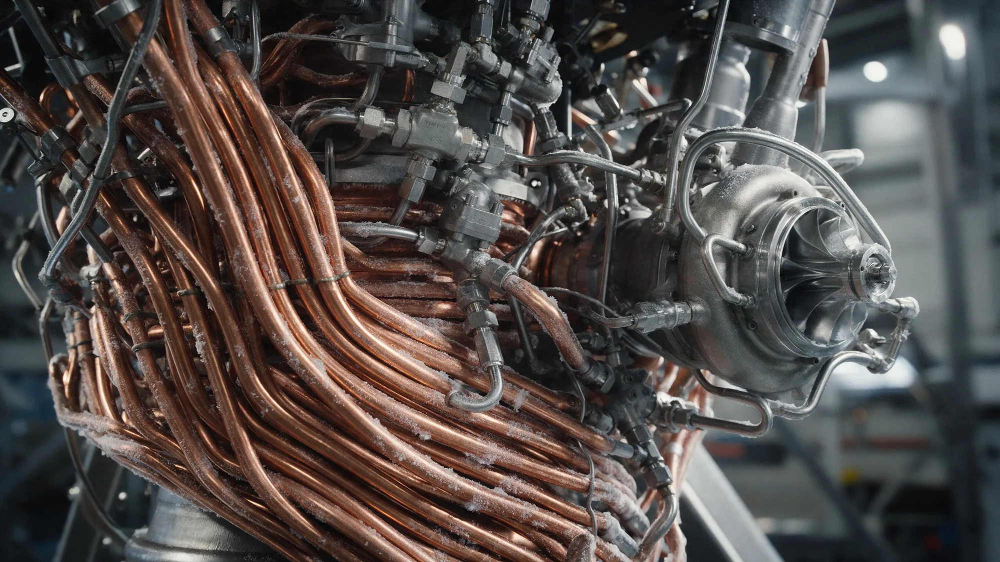
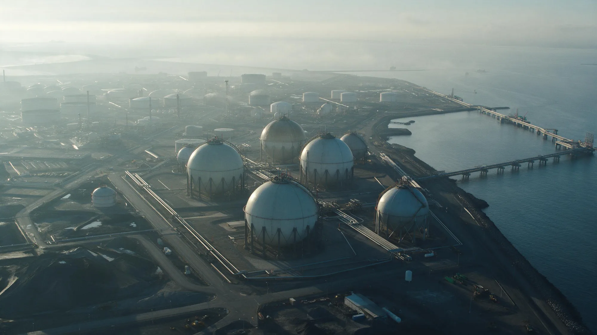
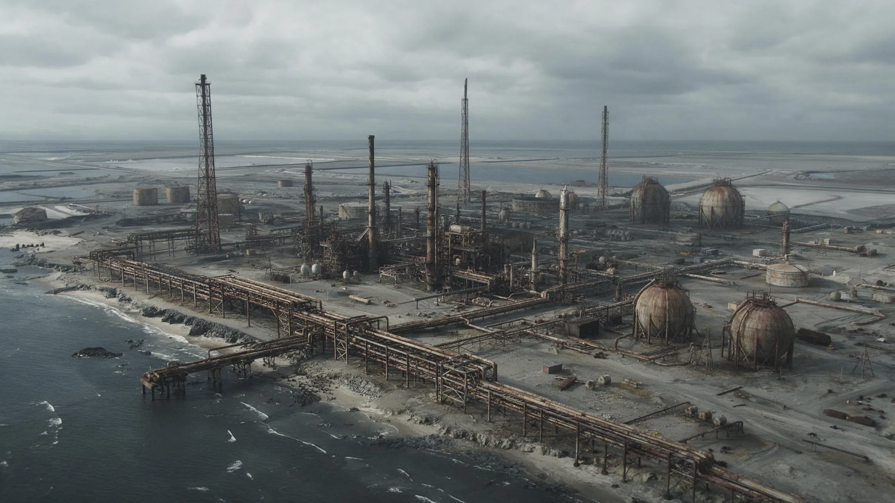

01
重型可复用运载
从 150 kN 液氧甲烷验证机起步，沿同一工程血脉迭代到全尺寸可复用入轨火箭。每代继承上一代的推力室、涡轮泵、阀门、试验规程与数据资产。
以液氧甲烷发动机、标准化卫星平台与行业数据服务，构建高频、可复用、可持续的天地运输网络。
火箭、卫星、数据互为条件。没有高频发射，卫星运力无从谈起；没有在轨数据，发射能力无法变现；三者闭合，公司才成为基础设施。

从 150 kN 液氧甲烷验证机起步，沿同一工程血脉迭代到全尺寸可复用入轨火箭。每代继承上一代的推力室、涡轮泵、阀门、试验规程与数据资产。
低轨星座是现金牛与能力验证场，月面中转与火面货运是十年后的第二曲线。三段式路径，每一站都建立在前一站的工程资产之上。

紧贴海岸、远离居民、能源充沛、轨道适配。旧工业骨架改造成新工业港口，多发射台支撑高频运营。
100—300 kN 级可重复点火液氧甲烷验证机。再生冷却推力室、燃气发生器循环涡轮泵、硬件与软件双重紧急关机。
第一年目标不是造出最强火箭，而是拿到公开、可复现、可对比的工程数据：燃烧稳定、推力调节、连续点火、遥测、安全联锁与寿命。
| 海平面推力 | 150 kN |
|---|---|
| 燃烧室压力 | 10 MPa（设计点，裕度 1.5×） |
| 推进剂 | LOX / LCH4 · 混合比 3.4 |
| 比冲（海平面） | ≥ 320 s |
| 重复点火 | ≥ 3 次 · 间隔 ≥ 30 分钟 |
| 推力调节 | 30% — 100% |
| 单次燃烧 | ≥ 30 s（长程 ≥ 100 s） |
| 整机重量 | ≤ 80 kg（不含阀门与气瓶） |
100—200 kg 级模块化平台，太阳同步轨道，X 频段下行。9—12 个月交付，可搭载多光谱、高光谱或 SAR 载荷。
首期与国内高校、院所的成熟平台合作，不自研大平台。首颗验证星可通过采购、合作或拼车发射获得在轨能力，把研发资源留给真正需要自研的部分。
| 平台质量 | 100 — 200 kg |
|---|---|
| 轨道 | 太阳同步 500 — 600 km |
| 设计寿命 | 3 — 5 年 |
| 数据下行 | X 频段 ≥ 100 Mbps |
| 载荷 | 多光谱 / 高光谱 / SAR / IoT |
| 交付方式 | API · 订阅 · 定制报告 · 项目制 |
EIGHT VERTICALS · 八大行业
发射场是高频运营与重资产结合的护城河。一旦建成，是后来者难以复制的先发优势。
任何一项不满足，都不是“差一点”，而是不可行。这四条决定了候选地的排序。

Year 01 解决“能不能造”，Year 02 解决“能不能持续造”，Year 03 解决“造出来能不能赚钱”。
所有核心岗位须实际全职，并签署《股东协议》《保密协议》《竞业限制协议》。期权池 10%—15%，分四期授予，四年归属。
欢迎投资人、行业伙伴、潜在联合创始人投递合作意向。